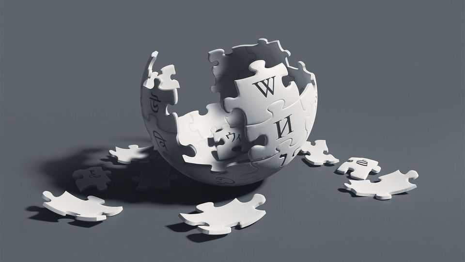

Humans will never again create a project quite like Wikipedia
As it turns 25, one of the internet’s unlikeliest successes faces grave new threats

Oct 29th 2026
Written on nearly 23,000 rolls of manuscript, the Yongle encyclopedia, commissioned by a Ming emperor in the 15th century, was the largest reference work in history. It held that title for around 600 years—until Wikipedia, a startup run out of a chaotic office in Florida, overtook it after just six years in business. Today the collaborative online encyclopedia runs to 30bn words in more than 300 languages. Its Latin edition alone has more articles than the “Encyclopedia Britannica”.
As Wikipedia celebrates its 25th anniversary this year, it faces big problems. It is shedding both readers and volunteer editors. It is at the centre of an escalating culture war. And AI poses an existential threat. As Richard Cooke, an Australian journalist, observes in a thought-provoking new book, Wikipedia is the largest encyclopedia ever written by humans—and it is likely to hold that title for ever. (Any future rival is sure to be made with the help of AI.)
As the world’s go-to crowd-written reference source, Wikipedia serves as both an oracle and a mirror. Its story can be traced back to a childhood purchase. When Jimmy Wales was three years old his mother bought a copy of the “World Book Encyclopedia”, which the family updated each year using stickers sent by post. Decades later, Mr Wales was casting around for business ideas. An online encyclopedia never need go out of date, he reasoned. So with a colleague, Larry Sanger, he founded Nupedia in 2000. Its seven-step process of editing and fact-checking meant that after five months it had approved a single article (on “atonality” in music). So to speed things up, they changed tack, launching a crowd-sourced encyclopedia in 2001.
Wikipedia was dreadful—and this was the secret of its rapid early growth. “The average person seeing the young Wikipedia for the first time thought they could do better,” Mr Cooke writes. Later that year the site came into its own, as more than 100 articles about the September 11th terrorist attacks were added in less than a month.
Seeing its commercial potential, its bosses considered selling ads. Yet after defections from volunteer editors who didn’t want to work for “WikiPAIDia”, they backed down and ran it as a non-profit. Mr Wales has called it “either the smartest or the dumbest thing that I ever did”: he has not made much money out of the phenomenon he co-founded.
Mr Cooke’s book is an enjoyable rabbit hole of information, rather like its subject. It paints an affectionate portrait of the many oddballs and misfits who have made the site what it is. The second-largest language on Wikipedia is Cebuano, a minority tongue of the Philippines, which has 6m articles—mostly about insects—that have been uploaded by a bot made by a Swede who married a Filipina. A user called Giraffedata cannot bear the phrase “comprised of”, and has spent 15 years removing tens of thousands of occurrences. No one will be surprised to learn that most Wikipedia editors are men.
The make-up of Wikipedia editors is reflected in the site’s content. Its article about Scrappy Doo, a cartoon character, was at one stage 2,000 words longer than the one for Poland. And although editors wear their national dress on the first day of the annual Wikimania conference, in a multinational display of diversity, they are not an especially diverse bunch. For Wikipedia’s first ten years, half of all edits came from five countries; there were more editors in the Netherlands than in Africa.
But now Wikipedia faces even bigger challenges. One is the febrile political climate. Certain topics have always provoked “edit wars”: the most contested pages include Israel, Jesus and Donald Trump. There have long been problem contributors (the Church of Scientology was the first organisation to be banned from editing Wikipedia, in 2009). But recent arguments about misinformation and censorship have been harder to deal with. Mr Sanger, whose relationship with Mr Wales soured, has denounced Wikipedia’s “globalist, academic, secular and progressive” bias. Last year Elon Musk, a former fan of the site, announced Grokipedia, an alternative to what he called “Wokepedia”.
The charged political atmosphere has exacerbated a second problem: a lack of editors. Early Wikipedia welcomed newbie contributors. But after some sticky cases of defamation, it tightened up its rules, particularly regarding articles about living people. Since 2017 new editors have been banned from creating fresh entries. Trigger-happy editors even deleted an entry by Mr Wales—on Mzoli’s Meat, a South African barbecue restaurant—for failing the notability test. As Mr Cooke puts it, anyone can edit Wikipedia in the same way that anyone can, in theory, represent themselves in court. For amateurs it can be a complex, hostile experience. The number of active editors in English has fallen by a third since its peak in 2007.
The third, most ominous threat is AI. Wikipedia played a crucial role in training large language models (LLMs) with its vast, free, multilingual dataset. It is probably “the single most important training corpus in the history of artificial intelligence”, writes Mr Cooke. This has had the side-effect of immortalising the site’s many errors and hoaxes. Ask ChatGPT who invented the electric toaster, and it may still tell you it was Alan MacMasters, a Scottish prankster who once credited himself as its inventor on Wikipedia as a joke.
AI’s absorption of Wikipedia means that more people than ever are reading its content. Yet it also means that fewer people are visiting the site itself. When a Wikipedia link is suggested by a search engine, nearly a tenth of users click through. When Wikipedia is cited by an LLM, the clickthrough rate is only 0.33% (and not all credit their sources). Since 2022 Wikipedia has lost almost a quarter of its readership—and with it, opportunities to solicit donations and recruit new editors. Wikipedians are “a smaller club working harder to maintain something fewer people see”, laments one longtime contributor.
Wikipedia’s billions of words, written, edited and categorised by millions of human volunteers, helped create the conditions for AI. Now AI’s use of that material threatens to suffocate the very source that helped bring it to life. ■